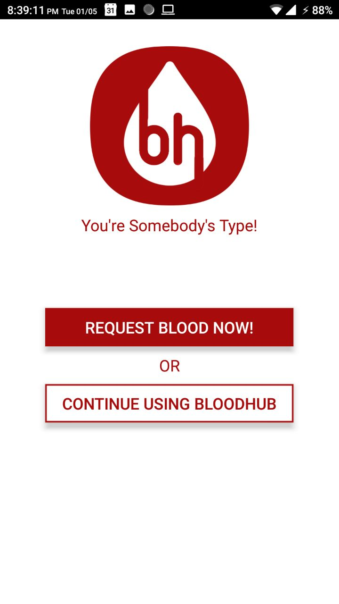
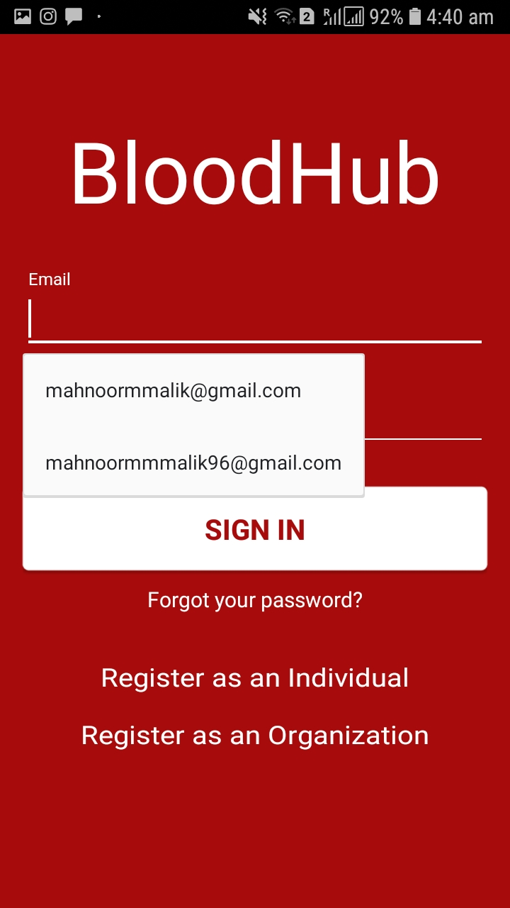
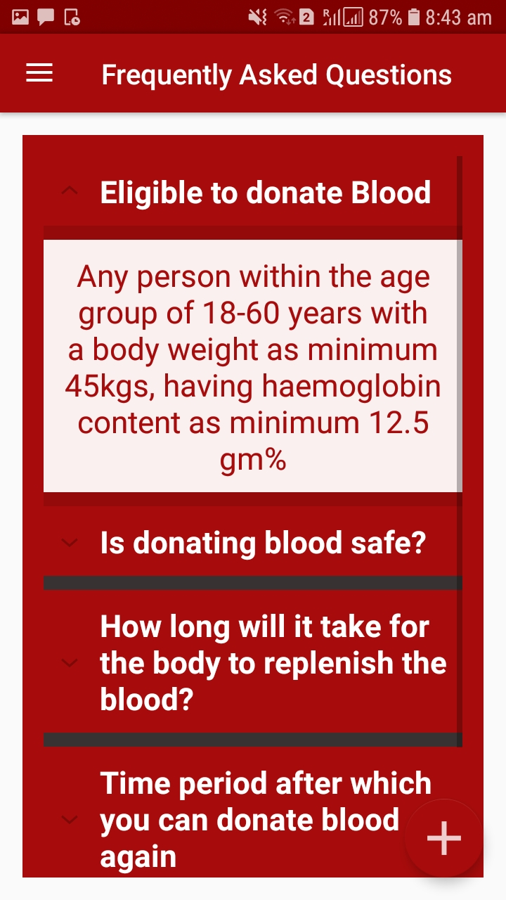

BloodHub
Connecting Blood Donors to Seekers
A mobile application that aims to connect blood donors to seekers in a platform that is efficient, engaging, and enjoyable to use. This project was developed during the Human-Computer Interaction course and then continued with a Summer Research grant.
Challenge
While studying the landscape of blood donation in Pakistan, three major problems were identified faced by the stakeholders: lack of awareness, shortage of regular donors, and regular requirement of blood for patients suffering from ailments like thalassemia.
Discussion & Solution
I defined a set of objectives for any system which aims to improve the current services, based on the findings of the research. These objectives are listed below:
- The platform should be an efficient way for patients to contact donors in case of emergencies
- The donor should be able to choose and donate at locations that are convenient for them
- Patients should be able to verify the health safety of a donor
- Donors should be able to get reviews of organizations and hospitals to make it easier to choose where to donate
- A patient's request for blood should not be lost in the mass communication as that decreases empathy
- Potential donors should be able to find information about the blood donation process to debunk myths
- A system of rewards or incentives should be implemented to increase the motivation to donate
- The platform should try to minimize the logistical problems faced by all parties in the process of donating and receiving blood
These objectives were kept in careful consideration while designing the proposed system. I believe that most, if not all, of these goals are met by the platform designed. The final design caters to individual users as well as organizations including hospitals, blood banks and societies that frequently require blood for their patients. I designed the mobile application with separate feature sets for these two stakeholders and specialized our interface according to their requirements.
Screens

.jpeg)


